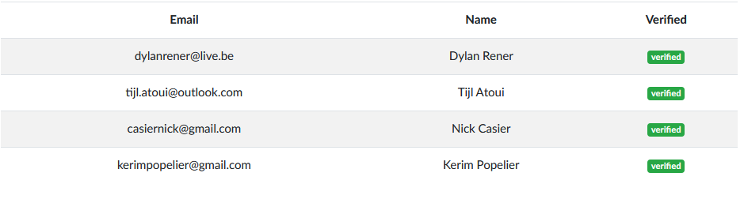

CyberSecurity Challenge Belgium
Date and duration:
10 March 2020
13:30 - 23:00
Proof:

Description
De CyberSecurity Challenge Belgium is een CTF voor scholen in Vlaanderen. Net zoals Brucon CTF is het doel hiervan vlaggen te vinden. Ik zat in een team samen met Dylan Rener, Tijl Atoui en Nick Casier. Doordat dit echter viel op een stage dag had ik persoonlijk niet veel tijd om te zoeken achter flags. Ik ben enkele uren onsuccesvol bezig geweest om te proberen een flag te halen uit metadata van een word document. Verder heb ik nog geprobeerd om via een Python script een flag op te halen van een server maar dit heb ik moeten laten vallen door tijdsgebrek.